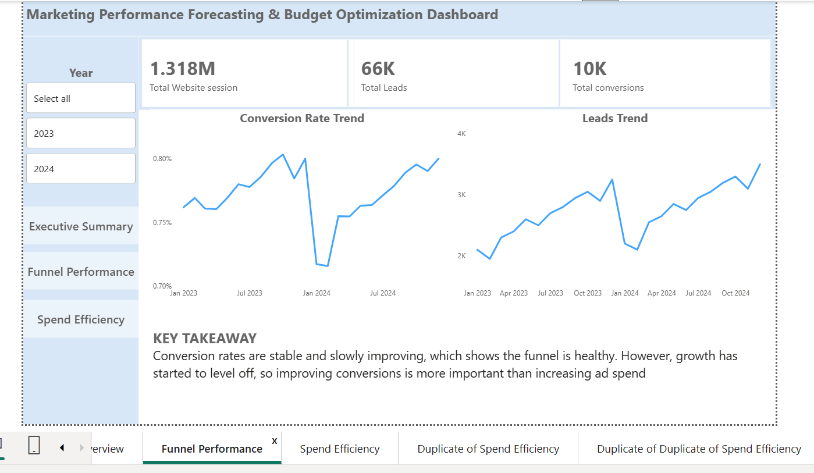
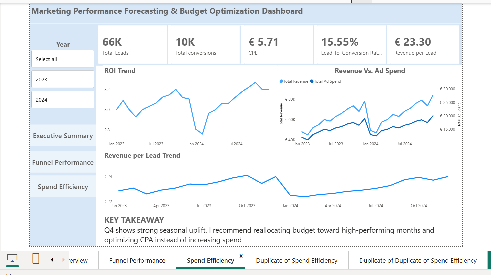
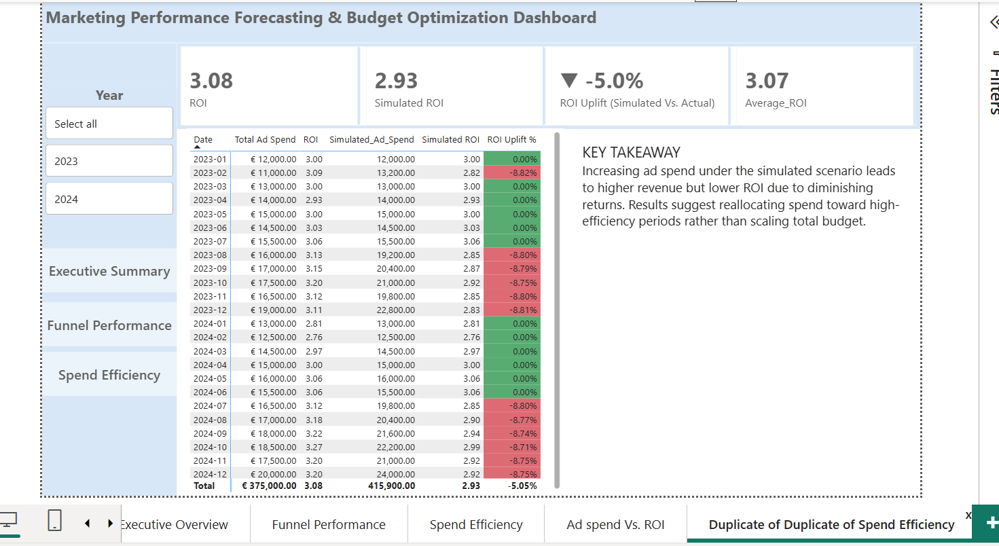

Power BI Dashboard
The interactive dashboard was structured around executive performance, funnel performance and marketing spend efficiency.

Executive Summary — revenue, ROI and marketing performance trends.

Funnel Performance — website sessions, leads and conversions.

Spend Efficiency — advertising spend, ROI and revenue per lead.

Budget Simulation — actual versus simulated advertising spend and ROI.